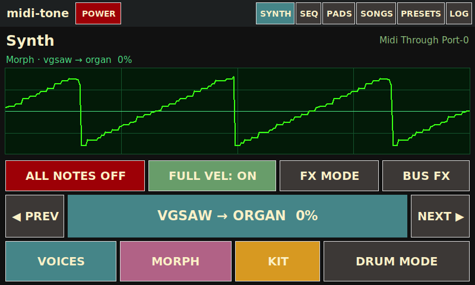
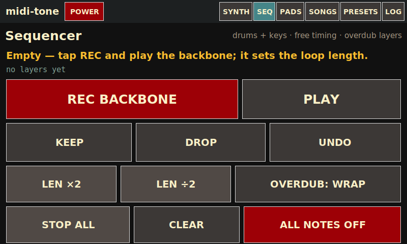
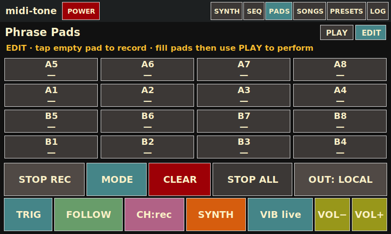
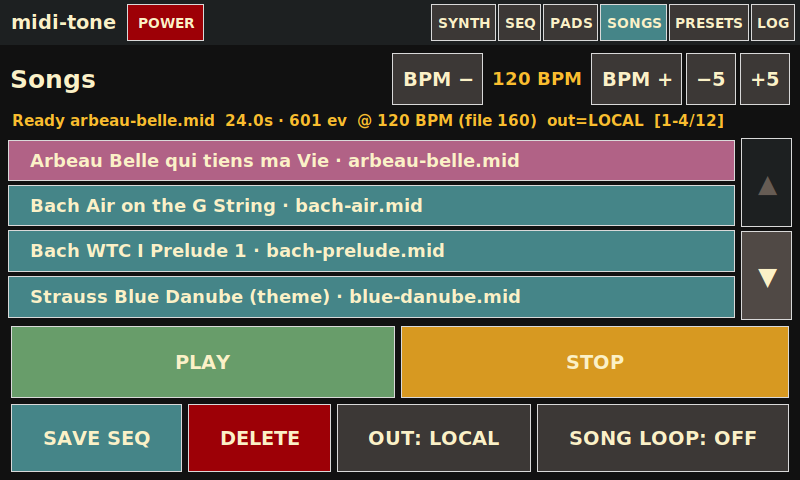
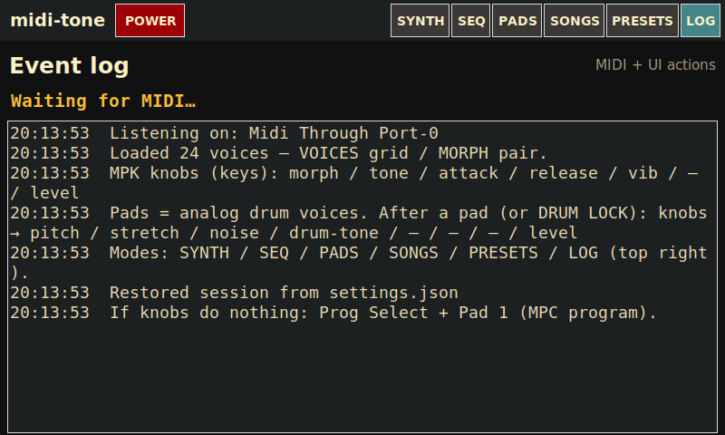
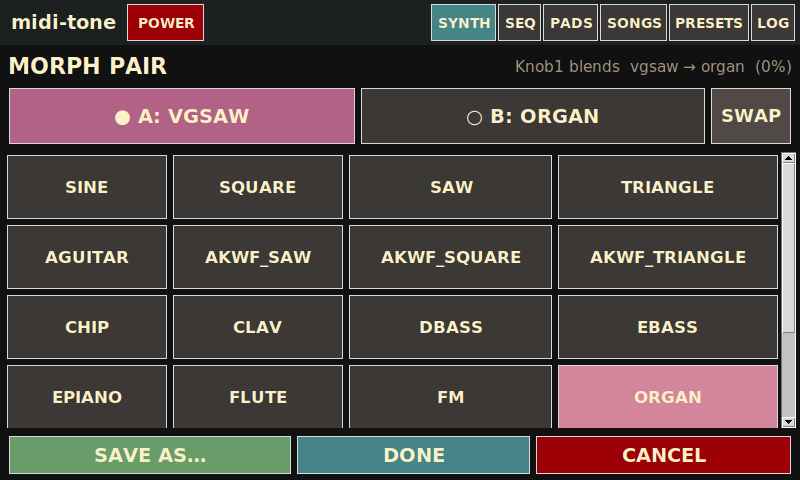
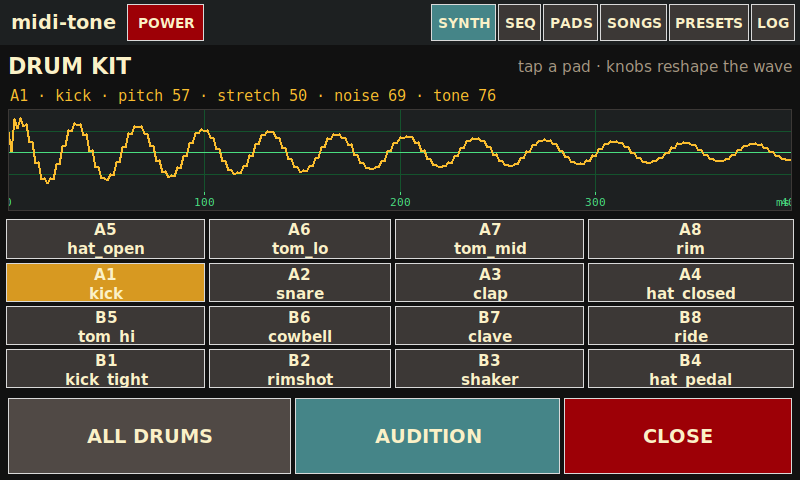
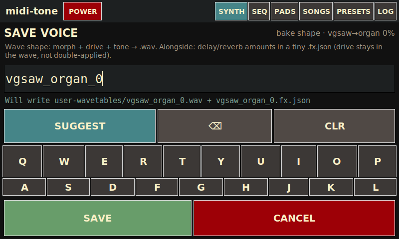

Global chrome
Always visible on every primary mode.
| midi-tone | App title (not a button). |
|---|---|
| POWER | Opens the shutdown / reboot confirmation screen (safe for kiosk — no desktop power UI). |
| SYNTH | Wavetable morph synth, CRT scope, voice / morph / kit / drum & FX modes. |
| SEQ | Free-timing overdub sequencer (drums + keys, layered takes). |
| PADS | 16 phrase pads with PLAY and EDIT views. |
| SONGS | Play Standard MIDI Files locally and/or out USB→DIN; BPM and loop controls. |
| PRESETS | Eight slots for saving / loading synth sound + full-velocity preference. |
| LOG | Scrolling MIDI / UI event log and panic / power shortcuts. |
SYNTH
Main performance surface: morphing wavetable voice, CRT scope, and transport / mode buttons.

| CRT scope | Live picture of the current morph wavetable (tiled to three periods). Updates when morph / voice changes. |
|---|---|
| Morph caption | Shows endpoints and blend, e.g. Morph · sine → square 0%. |
| Status lines | Last MIDI event, active notes, and knob summary (morph / tone / level / bend / vib). |
| ALL NOTES OFF | Panic — silence all sounding notes immediately. |
| FULL VEL | Toggle: force velocity 127 on note-ons (easier on a light touch), or use real velocity. |
| FX MODE | Remaps MPK knobs to the current insert FX target (per-voice or per-drum). Highlighted when on. |
| BUS FX | Remaps knobs to the global mix-bus FX (wet on the whole soft-synth mix). |
| ◀ PREV / NEXT ▶ | Step morph-A voice; parks morph at pure A. Center label shows current pair / blend; tap it to open VOICES. |
| VOICES | Full voice grid overlay to pick morph-A (and related actions). |
| MORPH | Overlay to set morph endpoints A/B and related options. |
| KIT | Drum kit explorer — pick a pad model, audition, and aim FX at drums. |
| DRUM MODE | When on, knobs 1–4 edit drum macros (pitch / stretch / noise / tone) and knob 8 is drum level. |
SEQ (Sequencer)
Free-timing overdub looper: record a backbone length, then stack layers of keys and drums.

| REC BACKBONE / OVERDUB | First press starts recording the backbone; press again to lock loop length and begin playback. Later REC starts an overdub take. |
|---|---|
| PLAY / ■ STOP | Start or stop sequencer playback (needs a backbone). |
| KEEP | Commit the pending overdub layer into the stack. |
| DROP | Discard the pending overdub take. |
| UNDO | Peel off the last committed layer. |
| LEN ×2 / LEN ÷2 | Double or half the loop length (within limits / existing layer constraints). |
| OVERDUB: WRAP / EXTEND | WRAP loops within the current length; EXTEND can grow the cycle while overdubbing. |
| STOP ALL | Stop recording and playback. |
| CLEAR | Wipe the sequence. |
| ALL NOTES OFF | Panic. |
PADS — EDIT
Build and fine-tune the 16 phrase pads (record into empty pads, set trigger / voice / channel).

| PLAY / EDIT | Toggle views. EDIT allows recording into empty pads and shows detail controls. |
|---|---|
| Pad grid A1–B8 | Empty pad: tap to arm record. Filled pad: launch / select for editing. |
| STOP REC | Finish an in-progress pad recording. |
| MODE | Arm “mode” then tap a pad to cycle that pad’s options (workflow helper). |
| CLEAR | Arm clear, then tap a pad to erase it. |
| STOP ALL | Stop all playing phrases. |
| OUT | Cycle phrase output: LOCAL / USB / BOTH (shares song USB port). |
| TRIG | Per-selected-pad: one-shot vs loop trigger. |
| FOLLOW / LOCK | Pad uses live global morph, or a locked voice snapshot. |
| CH | Force MIDI out channel or keep recorded channel. |
| Other detail buttons | May include synth mute / vibrato bake controls depending on pad state. |
PADS — PLAY
Performance grid: launch and stop clips without arming record.

| Pad grid | Tap filled pads to launch / toggle. Empty pads only select (no record in PLAY). |
|---|---|
| STOP ALL | Stop every playing phrase. |
| OUT | LOCAL / USB / BOTH routing for phrase MIDI. |
SONGS
Browse songs/ MIDI files, set tempo, play locally and/or to USB MIDI out.

| BPM − / + / −5 / +5 | Nudge playback tempo relative to the file. |
|---|---|
| Song list + ▲ / ▼ | Select a .mid file; scroll when the library is long. |
| PLAY / STOP | Start or stop song playback. |
| REFRESH / DELETE | Rescan folder or delete the selected file (as labeled on the row). |
| OUT | LOCAL / USB / BOTH — soft-synth and/or hardware DIN via USB MIDI adapter. |
| SONG LOOP | Repeat the file when it ends. |
| SAVE SEQ | Export the current sequencer take into songs/ as a MIDI file (when available). |
Demo songs seed into songs/ on first launch if the folder is empty.
PRESETS
Eight quick slots for the current synth sound and full-velocity preference.

| Slots 1–8 | Tap to select. Shows name or EMPTY. |
|---|---|
| LOAD | Recall the selected slot into the live synth. |
| SAVE | Store the current synth patch into the selected slot. |
| DELETE | Clear the selected slot. |
LOG
Diagnostic event stream for MIDI and UI actions.

| Event list | Scrolling history of notes, mode changes, and other messages. |
|---|---|
| CLEAR LOG | Wipe the on-screen log. |
| ALL NOTES OFF | Panic. |
| POWER | Same shutdown / reboot menu as the nav POWER button. |
VOICES overlay
Opened from SYNTH → VOICES (or tapping the center voice label).

| Voice tiles | Pick morph-A (and park morph at pure A). Includes built-in shapes and AKWF wavetables. |
|---|---|
| SAVE AS… | Bake the current morph / timbre into a new named wavetable (opens SAVE AS). |
| CLOSE / back | Return to SYNTH (footer / cancel control on the overlay). |
MORPH overlay
Choose which two voices Knob 1 morphs between.

| A / B side buttons | Select which endpoint the next grid tap assigns. |
|---|---|
| Voice grid | Assign the chosen side to a wavetable. |
| SWAP / CANCEL | Swap endpoints or restore the previous pair (as labeled). |
| SAVE AS… | Bake morph cycle to a new wavetable file. |
Knob 1 (CC normally mapped to morph) blends A→B while you play.
KIT overlay
Drum models for MPK pads, with preview scope and FX targeting.

| Pad / model buttons | Select which drum voice you’re editing / auditioning. |
|---|---|
| Wave preview | Shows the one-shot shape; stretch / pitch / noise / tone reshape it. |
| PLAY | Audition the selected drum. |
| ALL DRUMS | Point FX MODE at the shared kit bus. |
| CLOSE | Return to SYNTH. |
Enable DRUM MODE on SYNTH so knobs 1–4 edit drum macros live.
POWER
Kiosk-safe power controls (no desktop session UI).

| SHUTDOWN / POWER OFF | Halt the Pi after stopping the app / audio clients. |
|---|---|
| REBOOT | Restart the Pi. |
| CANCEL | Return to the previous mode without powering down. |
SAVE AS…
Bake the current morph timbre into a new wavetable stored under wavetables/.

| Name field / keyboard | Enter a filename for the new single-cycle WAV. |
|---|---|
| SAVE / CONFIRM | Write the baked cycle (and related patch data where implemented). |
| CANCEL | Dismiss without writing. |
MPK knobs (default mapping)
When FX MODE and BUS FX are off, and DRUM MODE is off:
| Knob 1 | Morph A→B |
|---|---|
| Knob 2 | Tone / brightness style control on the wavetable path |
| Knob 3 | Attack |
| Knob 4 | Release |
| Knob 5 | Vibrato rate |
| Knob 6 | Vibrato depth |
| Knob 7 | Reserved / free |
| Knob 8 | Synth level (or drum level while DRUM MODE is on) |
FX MODE / BUS FX retarget knobs to drive, delay, and reverb parameters for the selected insert or the master bus. Pitch bend and mod wheel still affect the voice as usual.